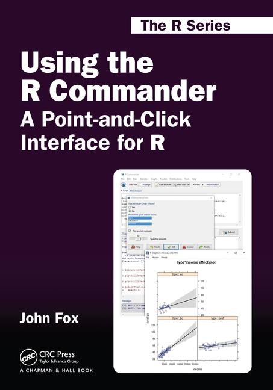

|  |
Data files used in the book Errata (2016-08-22) and updates (to Rcmdr version 2.7-0, September 2020) Additional R Commander installation and trouble-shooting instructions Review of the book in The American Statistican (71, 4: 370-371, 2017) Order the book from Chapman and Hall/CRC Press or Amazon |
Some of the information on this web site is in the form of Portable Document Format (PDF) files. A free viewer for PDF files, Adobe Reader, is available from the Adobe web site.